Preview 11 Wireframe Sesuai Tabel Format Antarmuka
Semua halaman yang ada pada Tabel 4.1 kini telah dibuatkan Wireframe-nya masing-masing.
1. Public Portal (Tampilan Publik)
1.1 Beranda Utama (Landing Page)
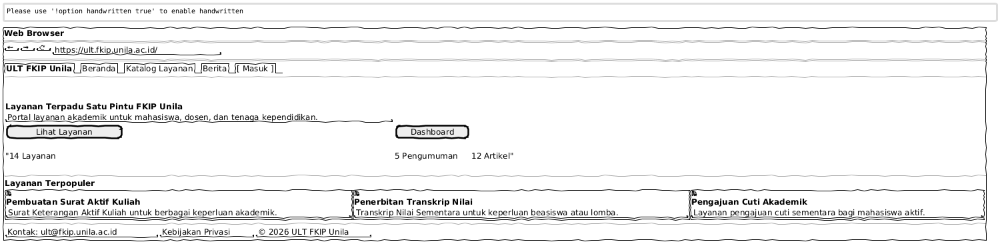
1.2 Katalog Layanan
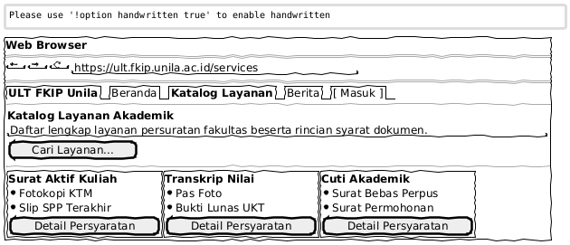
1.3 Berita & Pengumuman
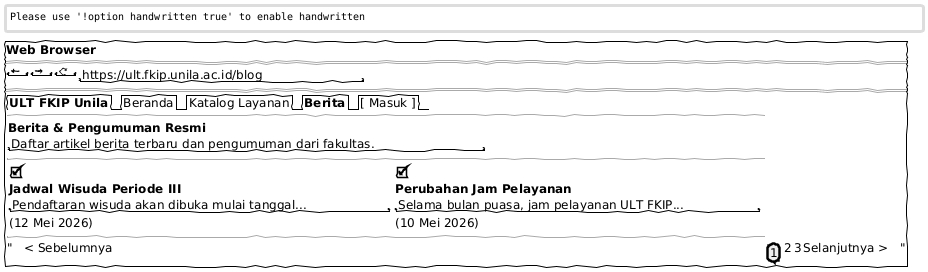
2. Authentication System (Sistem Autentikasi)
2.1 Login & Register
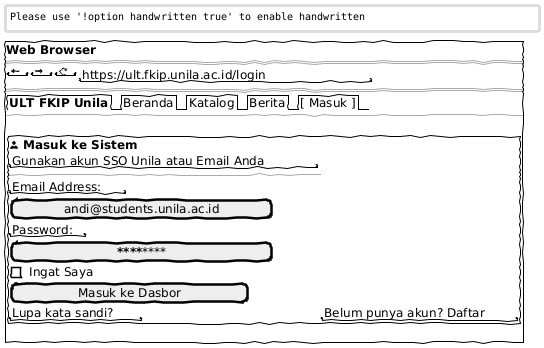
3. Student Portal (Dasbor Mahasiswa)
3.1 Beranda Mahasiswa
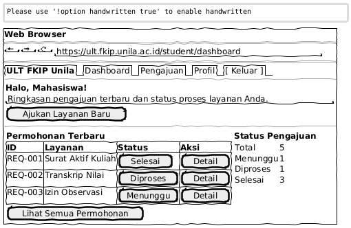
3.2 Form Pengajuan Layanan
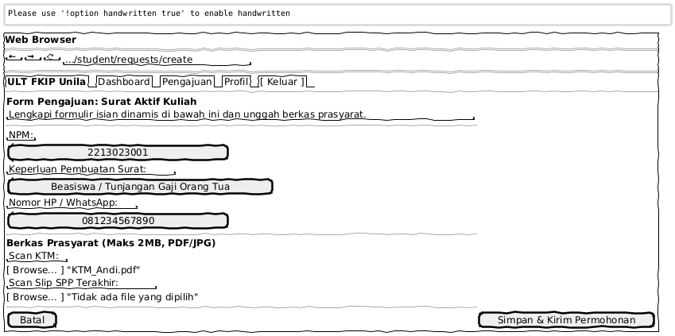
3.3 Riwayat & Pelacakan (Timeline)
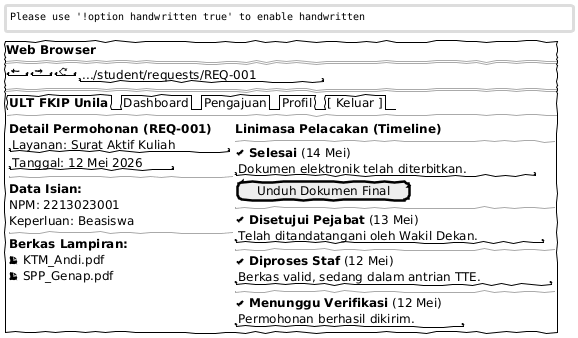
4. Admin/Staff Portal (Dasbor Operasional)
4.1 Dasbor Utama Staff
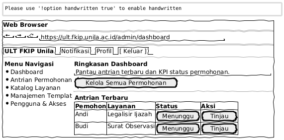
4.2 Detail Permohonan (Review)
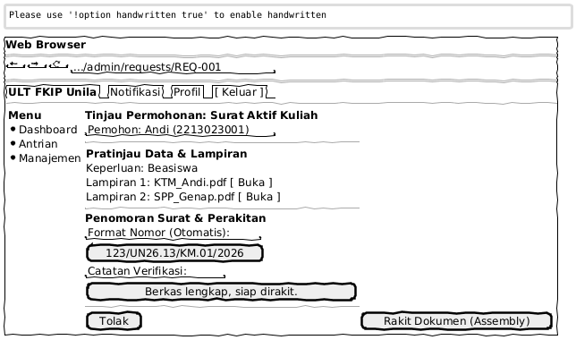
4.3 Manajemen Template
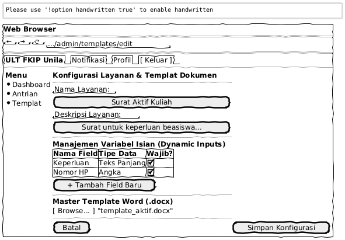
5. Signer Portal (Portal Tanda Tangan)
5.1 Antarmuka Verifikasi Pejabat
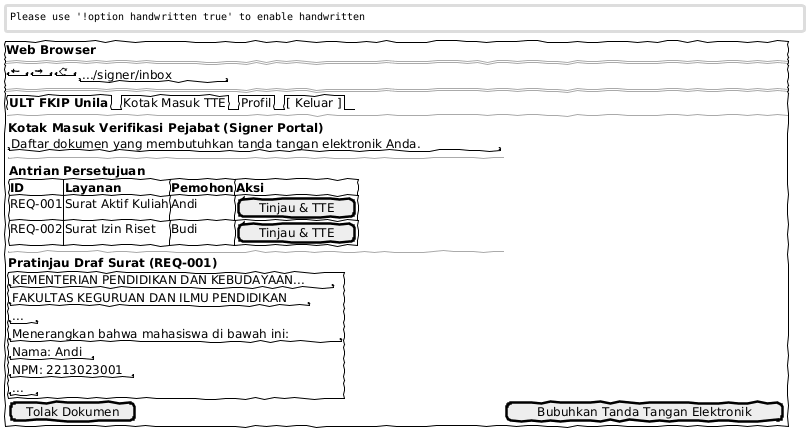